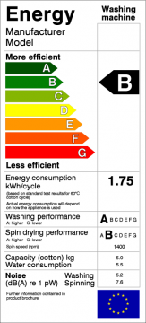

La paradoja de la eficiencia energética

En 1865 el economista inglés William Stanley Jevons observó que las mejoras tecnológicas que incrementaban la eficiencia en el uso del carbón llevó al aumento en el consumo de este mineral. Jevons argumentó que, contrario a la intuición común, las mejoras tecnológicas no provocarían una reducción del consumo de combustible.
La paradoja de Jevons, o el efecto Jevons, dice que, en la medida que se perfecciona la tecnología que aumenta la eficiencia del uso de un recurso, lo más probable es que aumente el consumo de dicho recurso, en vez de disminuir.
En términos simples, motores más eficientes, mayor consumo de combustible. ¿Eficiencia energética? A mayor eficiencia energética mayor consumo, y necesidad de nuevas fuentes de generación de energía (como represas, centrales termoeléctricas, etc.)
Matemáticamente:
Si Ef > Ei entonces Cf < Ci, pero Ci * Ei * Ni << Cf * Ef * Nf
E: es la eficiencia del consumo
N: es el número de consumidores
C: El consumo instantáneo
i: indica el estado inicial, f el estado final.
Los economistas lo llaman paradoja porque va en contra de la intuición económica de que mayor eficiencia implica menor consumo.
Un simil se da en el manejo de la información, a mayor eficiencia en el manejo de la información mayor demanda para procesar información, y mayor generación de nueva información, que requiere ser procesada. “Los computadores en vez aliviarnos el trabajo terminan haciéndonos trabajar más” :wink:
En los ochenta, en los primeros lugares donde trabajé, había 1 ó 2 computadores. Hoy todo el mundo tiene uno. El consumo de energía por concepto de informatización y apoyo a las labores administrativas aumento en uno o dos órdenes de magnitud.
En la década de 1980, los economistas Daniel Khazoom y Leonar Brookes postularon que: “las mejoras de eficiencia energética, que por amplias consideraciones, son económicamente justificadas al nivel micro, llevan a altos niveles de consumo de energía a nivel macro.”
El postulado de Khazoom-Brookes fue analizado por Harry Saunders en 1992, quien encontró las condiciones bajo las cuales esta hipótesis es cierta, siguiendo el análisis de teoría de crecimiento económico neo clásico.
O sea, la idea de que la eficiencia es la solución para nuestros problemas de consumo de energía es de dudosa validez. La única forma de disminuir el aumento del consumo de energía sería achicando la economía, es decir, dejando de crecer. Otra manera es interviniendo directamente en el mercado para regular el consumo, con impuestos, por ejemplo.
Hay economistas que sugieren que lo que se debe hacer es aplicar impuestos al consumo energético los que pueden ser re invertidos en la rehabilitación de “capital natural”.
Lo que el efecto Jevons nos dice es que la sola idea de eficiencia energética no es suficiente, y que las políticas de energía sustentable necesitan de otros tipos de intervenciones gubernamentales.
La pregunta es si las autoridades están conscientes de este efecto, y si los que promueven la eficiencia energética como la única solución para el problema también.

Por cierto, esto se manifiesta en el efecto rebote, que preocupa a varios economistas, y por cierto a grupos como el BreakThrough Institute, que publicó en febrero un reporte donde estudia este fenómeno.